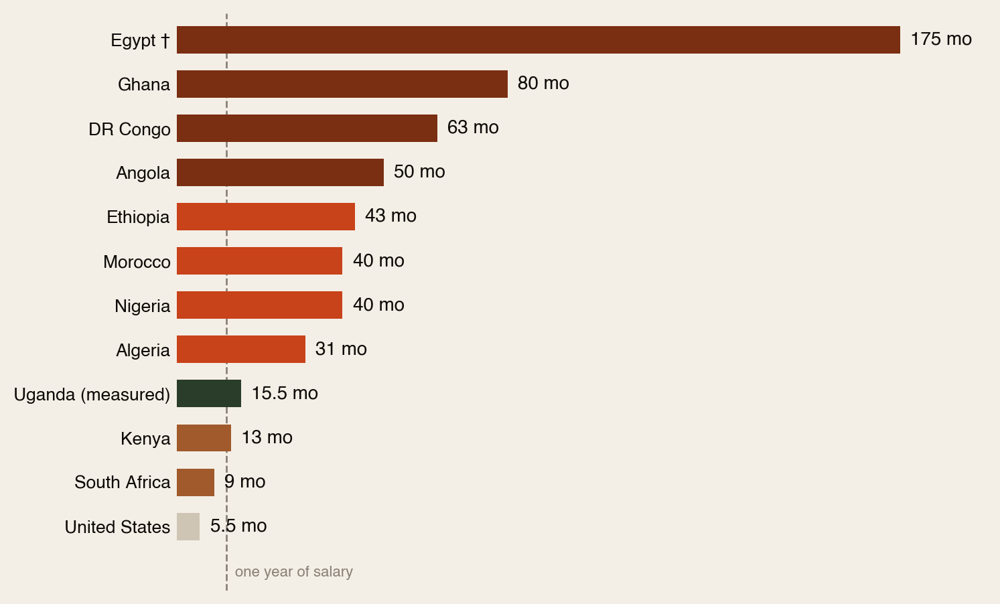
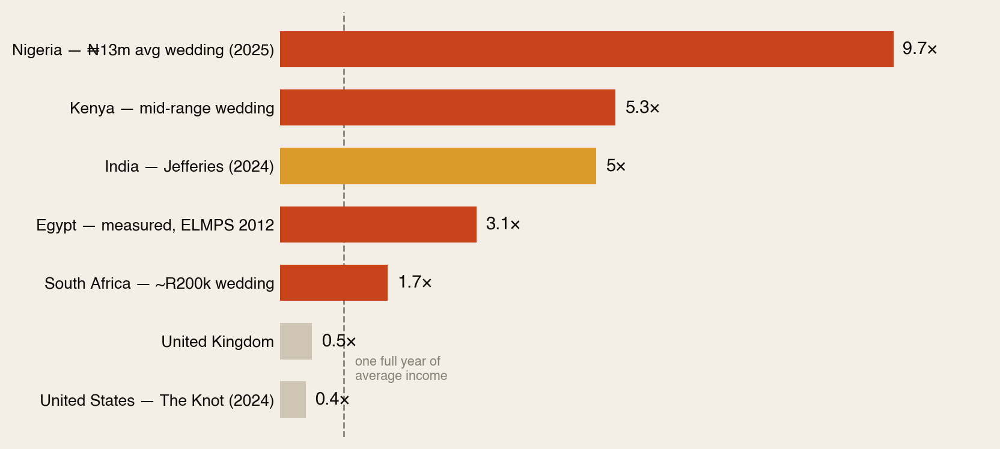
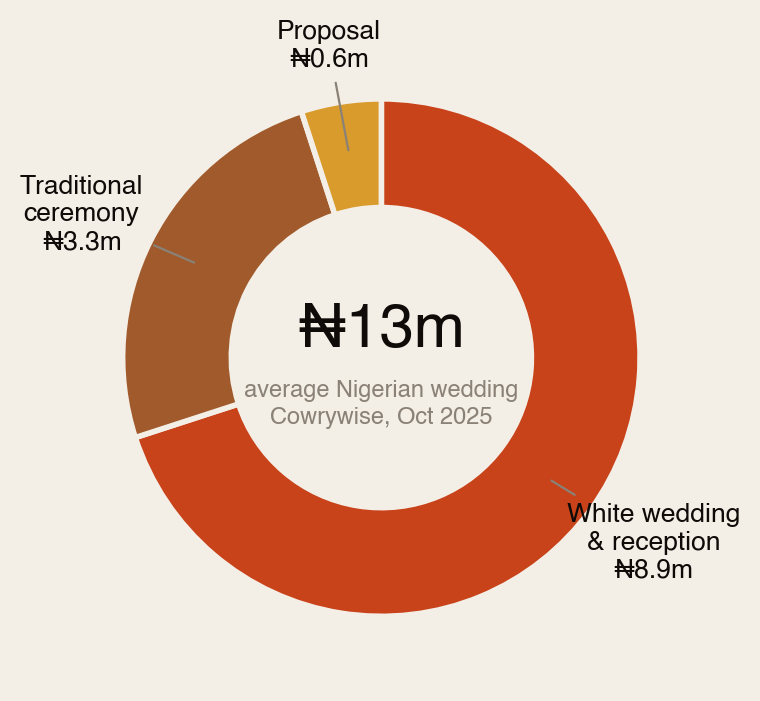
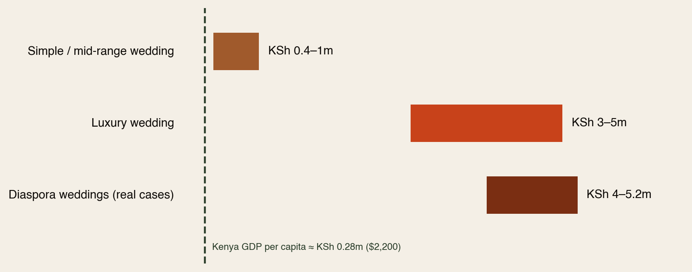
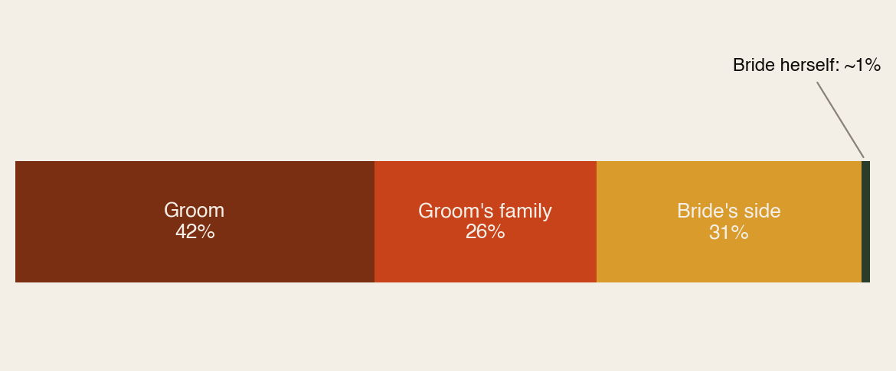
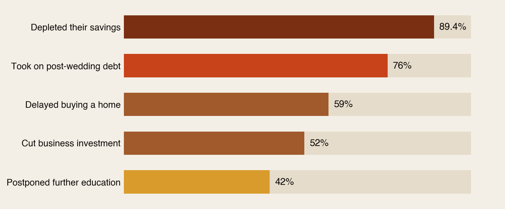

The price of “I do.”
An American wedding costs about 5 months of income. A Ghanaian wedding costs about 80. This is what weddings really cost across Africa — in plain language, with the bride price, the debt and the diaspora included.
Section 01The Short Version
In America or Britain, a wedding costs a few months’ pay. In most of Africa, it costs years of it.
Five numbers tell the story:
- ₦13 million — the average Nigerian wedding (about $8,700). That’s over 3 years of an average salary.
- 80 months — what a typical Ghanaian wedding costs in months of average income. Almost 7 years.
- 76% — the share of Ugandan couples who start married life in wedding debt. It takes them 2.6 years to pay it off. (That one isn’t an estimate — researchers measured it.)
- ~69% — how much of an Egyptian marriage the groom’s side pays. The bride herself? About 1%.
- 5.5 months — what the average American wedding costs in income terms. For comparison.
For most young African couples, the wedding is the biggest cheque they have ever written — often before they own anything at all.
Section 02One Chart, Ten Countries
Take a mid-range city wedding in each of Africa’s ten biggest economies. Divide it by the average monthly salary. Here’s what you get:

Three things to know before you quote this chart at a family gathering:
- Average salaries hide a lot — many people earn less, so for them it’s worse.
- The people throwing these weddings usually earn more than average, so for them it’s better.
- Only Uganda’s number comes from an actual academic study (15.5 months). It lands right in the middle of the estimates — a good sign the rest are in the right zone.
South Africa (9 months) and Kenya (13) look almost reasonable here. They’re not — they’re just less extreme than Ghana’s 80.
Section 03Africa vs the World

India is the world’s most famous wedding economy — a $130 billion industry where a wedding costs about 5× income per person.
Nigeria’s ratio is higher than India’s.
Meanwhile a US wedding is 0.4× — a few months of income. Same celebration, completely different economics. The difference isn’t that Africans love harder. It’s that the party is priced by social expectation while wages are priced by the local economy.
Section 04Nigeria’s ₦13 Million
Fintech Cowrywise surveyed it (October 2025): the average Nigerian wedding now costs ₦13 million. Against an average salary of ₦339,000 a month, that’s over three years of pay for one celebration. In Lagos, owambe culture keeps raising the bar — feeding 200 guests alone costs ₦2–3 million before you’ve touched aso-ebi, DJ or venue.

Two things hiding in that donut:
- The white wedding eats 70% of the money. The imported format costs three times the traditional ceremony — the part that actually carries the culture.
- Cowrywise’s own advice: spend no more than 10–15% of your annual income. The average spend isn’t a little over that line. It’s twenty times over it.
Section 05Kenya’s Three Tiers

Kenya’s weddings come in three tiers — and notice that even the cheapest tier starts above what an average Kenyan earns in a whole year:
- Simple: KSh 400,000–1 million.
- Luxury: KSh 3–5 million.
- Diaspora: real documented cases — Emma Ndung’u (Kent, Washington) spent KSh 4 million; Grace Wangugi (US) spent KSh 5.2 million — both run entirely by Nairobi planners over video calls.
How big is the whole industry? Reports range from KSh 15 billion to KSh 40 billion a year. Either way: billions, every year, on single days.
Section 06Egypt & Senegal: The Proof
Most wedding numbers online are guesses by vendors. Two countries have real academic measurements — and both passed our fact-check unanimously.
Egypt: measured three times over 13 years
- 1999 survey: an average marriage cost 4.5× the average person’s annual income — and 11× what a household spends per person in a year.
- By 2012 the total had reached about $10,000.

Because the groom’s side pays for nearly everything, young Egyptian men spend years saving before they can marry — many migrate to the Gulf just to afford a wedding back home. Then the currency collapsed: since 2021 the pound fell from 15 to 50 per dollar, the shabka (the bride’s gold) is up ~275%, and a middle-class Cairo wedding now runs EGP 1.3–2.8 million. Add the expected apartment and you reach EGP 3–5 million — decades of an average wage. Marriage rates are falling, and it’s now a national policy debate. That’s the † on Fig 1.
Senegal: the bride price, measured nationally
- Bride price was paid in 85% of first marriages.
- The payments alone — before any party — equal about 8 months of what an average person consumes in a year.
Section 07The Rest of the Top Ten, Fast
- Ghana — 80 months. A GHS 200,000–300,000 wedding against GHS 2,500–6,500 monthly incomes. The décor alone can cost two years of a public-sector salary. One survey found 97% of brides never wore the dress again.
- Morocco — 40–57 months. The negafa (wedding dresser) alone charges MAD 30,000–100,000; the full multi-day event tops MAD 200,000.
- Algeria — 25–35 months. The government has publicly said marriage costs are pushing marriage rates down.
- Ethiopia — ~43 months. A 100–150 guest wedding vs a $51/month average salary. Local business press calls it “two to four years of disposable income.”
- Angola — 37–75 months. The alambamento (bride-price presentation) plus reception, against $80/month formal wages.
- DR Congo — ~63 months. Weakest data of the ten — treat as a rough sketch.
Different currencies, same story: the party is priced by social expectation; the salary is priced by the economy.
Section 08The Hidden Layer: Bride Price
Every “average wedding cost” you’ve ever read misses a whole layer: in much of Africa, before any party happens, there are marriage payments.
- South Africa (lobola): typically R25,000–R50,000 — and for graduates and professionals, negotiations commonly reach R84,000–R200,000+. That’s before a white wedding of R150,000–350,000.
- Kenya (ruracio): dowry paid in stages, sometimes over years — a parallel bill that never shows up in wedding surveys.
- Angola (alambamento) and Egypt (shabka): same layer, different form — staged gifts in Luanda, non-negotiable gold in Cairo.
The real bill = marriage payments + traditional ceremony + white wedding. Most “averages” only count the last one.
Section 09The Morning After: What the Wedding Displaces
Uganda is where researchers actually measured what happens next. The average wedding cost 15.5 months of household income — and the strongest predictor of how much couples spent wasn’t their income. It was social pressure.

Read that chart slowly: 9 in 10 couples emptied their savings. 3 in 4 went into debt. 6 in 10 delayed buying a home. The World Bank has a name for ceremonial spending at this scale: a poverty trap — money that buys no asset and earns no return, transferred from the couple’s future to one day.
Section 10Why We Spend Like This
Nobody here is being foolish. The costs are high for real reasons:
- Guest count = status. A small guest list reads as poverty. In Morocco, 200 guests is “modest.”
- One marriage, three events. Proposal + traditional + white wedding. Each has its own bill.
- Bride price comes first — before any celebration money is spent.
- Social media raised the bar. Drone footage and outfit changes used to be luxury. Now they’re the baseline.
- The deepest reason: community is the insurance policy. Where there’s no pension and no safety net, generous hospitality builds the network you’ll lean on in hard times. The wedding isn’t waste — it’s a premium payment.
That last one is why no budgeting tip alone fixes this. The fix has to be social — communities and role models resetting what “enough” looks like.
Section 11The Diaspora Wedding
If you live abroad, your wedding lives in two economies at once: you earn at US/UK prices, but the guest list and expectations live back home. Four things happen:
- You outsource it. Kenyan brides abroad are running multi-million-shilling weddings entirely through Nairobi planners — it’s become an industry.
- You pay twice. One celebration abroad, one at home, plus flights — and often relatives’ travel too.
- You’re the wallet of last resort. A sibling’s wedding is one of the hardest remittance requests to refuse — part of the ~$95bn that flows home every year.
- Your wedding moves the market. When a KSh 5m diaspora wedding lands in a KSh 700k community, everyone’s expectations shift upward.
None of this is bad by itself — weddings feed real local businesses. The question is who carries the cost, and what that money could have built instead.
Section 12A Smarter Yes
- The 10–15% rule. Cowrywise’s planners say: cap the wedding at 10–15% of annual income. Radical against current habits — which is why it’s worth saying.
- Budget the whole stack. Bride price + traditional + white wedding = one budget. Your bank account counts them together; so should you.
- The traditional ceremony is the bargain. It costs a third of the white wedding — and it’s the part that carries the culture.
- Diaspora: pick your number before the calls come. A pre-committed contribution turns pressure into a plan.
- Do the compounding math once. A year of income invested at the start of a marriage grows for decades. The same money spent on one day doesn’t. Choose your balance — but choose it on purpose.
Celebrate loudly. Budget quietly. The marriage is the asset — the wedding is one day of it.
Section 13How We Checked
This report merges two research passes — a multi-source deep-research sweep with adversarial fact-checking, plus a contributed ten-economy data report whose claims we re-verified before including. Every number carries one of three labels:
- Measured — real academic surveys: Egypt (EIHS 1999, ELMPS 2006/2012), Senegal (PSF 2006), Uganda (MIU 2026).
- Reported — named sources we re-checked: Nigeria’s ₦13m (Cowrywise), Kenya’s diaspora cases (Daily Nation), lobola ranges (The Citizen + others), US and India benchmarks (The Knot, Jefferies).
- Estimates — industry figures, useful for direction not decimals: the country cost bands and the months-of-salary chart.
Corrections we made along the way: Egypt’s headline relabelled as a middle-class-wedding-vs-average-wage comparison; Kenya’s industry size shown as a range (sources conflict); DR Congo flagged as weakest data; one mis-attributed Egyptian statistic refuted and cut. Full source list and methodology in the PDF edition. Companion reports: The Living Room vs The Bedroom and Africa Is Under-Processed.
The diaspora helps the diaspora.
Africa Global Forum is a peer network for Africans abroad — help each other, sit together, and bounce ideas. The research above is part of an open library. The Forum itself is by application.